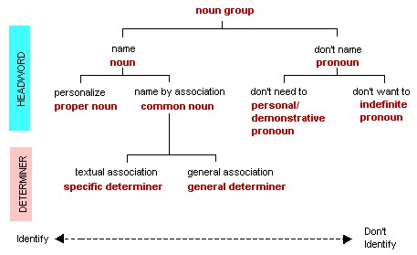

1.7 noun group choice
In the relation between language and the world, these different types of noun group show a range of choices between a very clear identification of someone or something, and a very clear decision not to identify. The range can be set out as follows, resulting from the choices that have just been explained.
